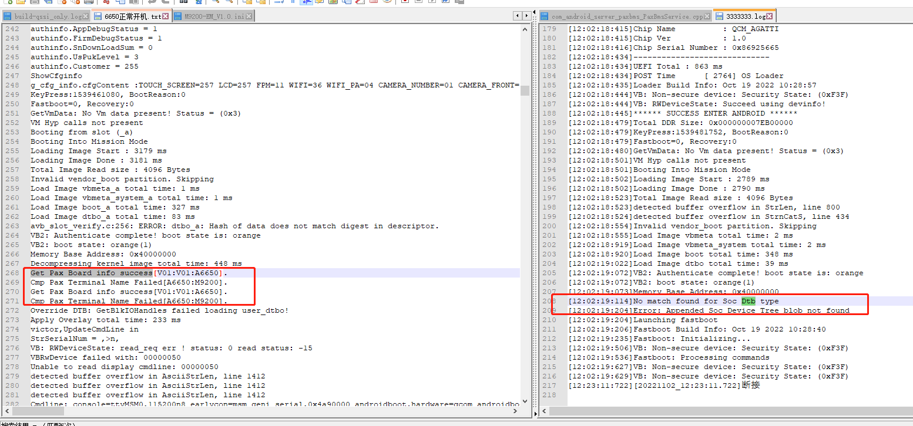

概述
AP/SP在ABL和init阶段。
sp_init ABL流程
sp_init通过串口操作sp是在ABL阶段，主要有以下几个功能：
fastboot write pax nv
fastboot flash
init uart get cfg/authorinfo获取
fastboot flash命令定制
看一下fastboot flash命令定制烧录spexsn/sp_reboot命令，pax_cfg/cfg分区、sp_monitor/sp_boot镜像流程：
UM.9.15/bootable/bootloader/edk2/QcomModulePkg/Library/FastbootLib/FastbootCmds.c:判断modem镜像和关键字是否匹配。
目前只做了cfg和pax_cfg分区烧录，sp exsn烧录，sp_reboot命令。
* FastbootCommandSetup (IN VOID *Base, IN UINT64 Size)
└── {"flash:", CmdFlash},
├── Ret = is_overlay_partition(PartitionName); //判断烧录命令是否带_pax_，比如 paydroidboot flash modem_a_pax_A6650_EM NON-HLOS_EM.bin
│ └── Token = StrStr(partitionName,L"_pax_");
└── if(StrnCmp(PartitionName+Ret+5, Buff16, StrLen(Buff16)) == 0){// only flash match Terminal name,else return; +5 means _pax_
└── if(StrLen(PartitionName) > (Ret+5+StrLen(Buff16))){//partition_name + _pax_ + TermialName. something more after terminalname,like modem_a_pax_A6650_EM
├── if(getCfgBaseBand(Buff) < 0 )
│ ├── getCfgItemValStr("BASEBAND", buf); //获取BASEBAND关键字 例如BASEBAND="77"
│ ├── #define BASEBAND_A6650_EM_CFG "77"
│ └── if((0 == AsciiStrCmp(Buff, BASEBAND_A6650_EM_CFG) && NULL != StrStr(PartitionName, L"A6650_EM"))||(0 == AsciiStrCmp(Buff, BASEBAND_A6650_NA_CFG) && NULL != StrStr(PartitionName, L"A6650_NA"))) //如果BASEBAND="77" 且命令带有A6650_EM字符，满足条件
│ └── SetMem(PartitionName+Ret, MAX_GPT_NAME_SIZE-Ret, 0); //烧录
└── if(is_sp_partition(PartitionName)) //是否支持SP
├── if ( (StrnCmp(PartitionName, LPAX_CFG_PARTITION_NAME, StrLen(LPAX_CFG_PARTITION_NAME)) == 0)|| (StrnCmp(PartitionName, LCFG_PARTITION_NAME, StrLen(LCFG_PARTITION_NAME)) == 0) ) //cfg和pax_cfg分区烧录
│ └── HandleRawImgFlash (LPAX_CFG_PARTITION_NAME,ARRAY_SIZE (LPAX_CFG_PARTITION_NAME),mFlashDataBuffer, mFlashNumDataBytes);
├── else if (paxnv_download_all(PartitionName, mFlashDataBuffer, mFlashNumDataBytes)) //sp exsn烧录
│ └── if(StrnCmp(DownloadName, L"exsn", StrLen(L"exsn")) == 0 )
│ └── writeToPartitionPax(aucTempbuf,len+2,UBOOT_EXSN_OFFSET);
└── if (EFI_SUCCESS == Status || (StrnCmp(PartitionName, L"sp_reboot", StrLen(L"sp_reboot")) == 0)) //sp重启命令
└── sp_download_all(PartitionName, mFlashDataBuffer, mFlashNumDataBytes)
└── else if(StrnCmp(DownloadName, L"sp_reboot", StrLen(L"sp_reboot")) ==0 )
└── pax_sp_reset();
SP属性通过cmdline到kernel
SP属性通过cmdline到kernel具体实现方式和哪些cmdline请参考：
0024_mtk_qcom_添加cmdline实现方案.md
根据cmdline设置pax属性流程(ro.pax.product.id等)
首先了解一下
ro.pax.product.id设置流程：system/core/init/init.cpp:
* SecondStageMain(int argc, char** argv)
└── PropertyInit();
└── ProcessKernelCmdline();
└── if (StartsWith(key, ANDROIDBOOT_PREFIX)) //constexpr auto ANDROIDBOOT_PREFIX = "androidboot."sv;
└── pax_import_kernel_nv(key,value);
└── if (!strcmp(name, "TERMINAL_NAME")) //system/core/init/pax_init.cpp
├── InitPropertySet("ro.boot.paxproduct", value.c_str());
└── InitPropertySet("ro.fac.cfg.TERMINAL_NAME", value.c_str());
core/init/pax_init.cpp具体内容如下：
#include <string.h>
#include <stdio.h>
#include <unistd.h>
#include <stdlib.h>
#include <android-base/properties.h>
#include <android-base/logging.h>
#include "property_service.h"
#include "pax_init.h"
namespace android {
namespace init {
void pax_import_kernel_nv(const std::string &key, const std::string& value)
{
const char *name = key.c_str();
if (!strcmp(name, "TERMINAL_NAME"))
{
InitPropertySet("ro.boot.boardname", value.c_str());
InitPropertySet("ro.fac.cfg.TERMINAL_NAME", value.c_str());
InitPropertySet("ro.boot.paxproduct", value.c_str());
}
else if (!strcmp(name, "paxboot_mode"))
{
InitPropertySet("ro.paxboot.mode", value.c_str());
}
else if (!strcmp(name, "TOUCH_SCREEN"))
{
InitPropertySet("ro.touch.screen", value.c_str());
InitPropertySet("ro.fac.cfg.TOUCH_SCREEN", value.c_str());
}
else if(!strcmp(name, "paxspsn"))
{
InitPropertySet("pax.sp.SN", value.c_str()); //sn number
if(value != ""){
InitPropertySet("ro.fac.sn", value.c_str());
InitPropertySet("ro.serialno", value.c_str());//new
}
}
//ro.fac.exsn
else if(!strcmp(name, "paxspexsn"))
{
InitPropertySet("ro.fac.exsn", value.c_str());//new
InitPropertySet("pax.sp.exsn", value.c_str());
}
else if(!strcmp(name, "MAIN_BOARD"))
{
InitPropertySet("ro.fac.cfg.MAIN_BOARD", value.c_str());
}
else if(!strcmp(name, "PORT_BOARD"))
{
InitPropertySet("ro.fac.cfg.PORT_BOARD", value.c_str());
}
else if(!strcmp(name, "SAM_BOARD"))
{
InitPropertySet("ro.fac.cfg.SAM_BOARD", value.c_str());
}
else if(!strcmp(name, "ANT_BOARD"))
{
InitPropertySet("ro.fac.cfg.ANT_BOARD", value.c_str());
}
else if(!strcmp(name, "PRINTER"))
{
InitPropertySet("ro.fac.cfg.PRINTER", value.c_str());
}
else if(!strcmp(name, "MAG_CARD"))
{
InitPropertySet("ro.fac.cfg.MAG_CARD", value.c_str());
}
else if(!strcmp(name, "IC_CARD"))
{
InitPropertySet("ro.fac.cfg.IC_CARD", value.c_str());
}
else if(!strcmp(name, "RF_1356M"))
{
InitPropertySet("ro.fac.cfg.RF_1356M", value.c_str());
}
else if(!strcmp(name, "ETHERNET"))
{
InitPropertySet("ro.fac.cfg.ETHERNET", value.c_str());
}
else if(!strcmp(name, "MODEM"))
{
InitPropertySet("ro.fac.cfg.MODEM", value.c_str());
}
else if(!strcmp(name, "CDMA"))
{
InitPropertySet("ro.fac.cfg.CDMA", value.c_str());
}
else if(!strcmp(name, "BASEBAND"))
{
InitPropertySet("ro.fac.cfg.BASEBAND", value.c_str());
}
else if(!strcmp(name, "WCDMA"))
{
InitPropertySet("ro.fac.cfg.WCDMA", value.c_str());
}
else if(!strcmp(name, "4G"))
{
InitPropertySet("ro.fac.cfg.4G", value.c_str());
}
else if(!strcmp(name, "WIFI_NET"))
{
InitPropertySet("ro.fac.cfg.WIFI_NET", value.c_str());
}
else if(!strcmp(name, "WIFI"))
{
InitPropertySet("ro.fac.cfg.WIFI", value.c_str());
}
else if(!strcmp(name, "FPM"))
{
InitPropertySet("ro.fac.cfg.FPM", value.c_str());
}
else if(!strcmp(name, "BLUE_TOOTH"))
{
InitPropertySet("ro.fac.cfg.BLUE_TOOTH", value.c_str());
}
else if(!strcmp(name, "DUAL_SIM"))
{
InitPropertySet("ro.fac.cfg.DUAL_SIM", value.c_str());
}
else if(!strcmp(name, "LCD"))
{
InitPropertySet("ro.fac.cfg.LCD", value.c_str());
}
else if(!strcmp(name, "BAT_DECT"))
{
InitPropertySet("ro.fac.cfg.BAT_DECT", value.c_str());
}
else if(!strcmp(name, "SAM_NUM"))
{
InitPropertySet("ro.fac.cfg.SAM_NUM", value.c_str());
}
else if(!strcmp(name, "CIPHER_CHIP"))
{
InitPropertySet("ro.fac.cfg.CIPHER_CHIP", value.c_str());
}
else if(!strcmp(name, "CAMERA_FRONT"))
{
InitPropertySet("ro.fac.cfg.CAMERA_FRONT", value.c_str());
}
else if(!strcmp(name, "CAMERA_BACK"))
{
InitPropertySet("ro.fac.cfg.CAMERA_BACK", value.c_str());
}
else if(!strcmp(name, "PN"))//PN
{
InitPropertySet("ro.fac.cfg.PN", value.c_str());//new
InitPropertySet("ro.pci.hardware", value.c_str()); //PCI hardware
}
else if(!strcmp(name, "CAMERA_NUMBER"))
{
InitPropertySet("ro.fac.cfg.CAMERA_NUMBER", value.c_str());
}
else if(!strcmp(name, "SAM_NUM"))
{
InitPropertySet("ro.fac.cfg.SAM_NUM", value.c_str());
}
else if(!strcmp(name, "CONFIG_FILE_VER"))
{
InitPropertySet("ro.fac.cfg.CONFIG_FILE_VER", value.c_str());
}
else if(!strcmp(name, "MESH_BOARD"))
{
InitPropertySet("ro.fac.cfg.MESH_BOARD", value.c_str());
}
else if(!strcmp(name, "RF_PARA_1"))
{
InitPropertySet("ro.fac.cfg.RF_PARA_1", value.c_str());
}
else if(!strcmp(name, "RF_PARA_2"))
{
InitPropertySet("ro.fac.cfg.RF_PARA_2", value.c_str());
}
else if(!strcmp(name, "RF_PARA_3"))
{
InitPropertySet("ro.fac.cfg.RF_PARA_3", value.c_str());
}
else if(!strcmp(name, "RF_PARA_4"))
{
InitPropertySet("ro.fac.cfg.RF_PARA_4", value.c_str());
}
else if(!strcmp(name, "RF_PARA_5"))
{
InitPropertySet("ro.fac.cfg.RF_PARA_5", value.c_str());
}
else if(!strcmp(name, "RF_PARA_6"))
{
InitPropertySet("ro.fac.cfg.RF_PARA_6", value.c_str());
}
else if(!strcmp(name, "RF_PARA_7"))
{
InitPropertySet("ro.fac.cfg.RF_PARA_7", value.c_str());
}
else if(!strcmp(name, "RF_PARA_8"))
{
InitPropertySet("ro.fac.cfg.RF_PARA_8", value.c_str());
}
else if(!strcmp(name, "RF_PARA_9"))
{
InitPropertySet("ro.fac.cfg.RF_PARA_9", value.c_str());
}
else if(!strcmp(name, "RF_PARA_10"))
{
InitPropertySet("ro.fac.cfg.RF_PARA_10", value.c_str());
}
else if(!strcmp(name, "paxspmac"))
{
InitPropertySet("ro.fac.mac", value.c_str());
InitPropertySet("pax.sp.mac", value.c_str());
}
else if(!strcmp(name, "MSR_VER"))
{
InitPropertySet("pax.ctrl.magchipver", value.c_str());
}
else if(!strcmp(name, "BIOS"))
{
InitPropertySet("pax.ctrl.spbootver", value.c_str());
InitPropertySet("pax.sp.BIOS",value.c_str());
}
else if(!strcmp(name, "MONITOR"))
{
InitPropertySet("pax.ctrl.spver", value.c_str());//Ftest need
InitPropertySet("pax.sp.MONITOR", value.c_str());//Ftest need
}
else if(!strcmp(name, "BATTERY"))
{
InitPropertySet("ro.fac.cfg.BATTERY", value.c_str());
}
else if(!strcmp(name, "AppDebugStatus"))
{
if(!strcmp(value.c_str(), "1")){
InitPropertySet("pax.config.apkruntime", "false");
InitPropertySet("ro.pax.disable.app_rt.verify","true");
}else {
InitPropertySet("pax.config.apkruntime", "true");
InitPropertySet("ro.pax.disable.app_rt.verify","false");
}
}else if(!strcmp(name, "has_battery_removed"))
{
if(!strcmp(value.c_str(), "1")){
InitPropertySet("pax.config.nobattery", "true");
}else{
InitPropertySet("pax.config.nobattery", "false");
}
}
else if(!strcmp(name, "paxbtmac"))//btmac
{
InitPropertySet("ro.fac.btmac", value.c_str());
InitPropertySet("pax.bt.mac", value.c_str());
}
else if(!strcmp(name, "paxwifimac"))//wifimac
{
InitPropertySet("ro.fac.wifimac", value.c_str());
InitPropertySet("pax.wifi.mac", value.c_str());
}
else if(!strcmp(name, "msm_drm.dsi_display0"))//dpi
{
InitPropertySet("ro.sf.lcd_density", value.substr(value.size()-4,3));
}
else if(!strcmp(name, "paxctrllog"))//paxctrllog
{
InitPropertySet("pax.ctrl.log", value.c_str());
}
//[FEATURE]-Add-BEGIN by (xielianxiong@paxsz.com), 2021/12/29 for apk verify pax signature
#ifdef PAXDROID_PCI
InitPropertySet("sys.paxdroid.debug", "no");
#elif PAXDROID_RELEASE
InitPropertySet("sys.paxdroid.debug", "no");
#else
InitPropertySet("sys.paxdroid.debug", "no");
#endif
//[FEATURE]-Add-end by (xielianxiong@paxsz.com), 2021/12/29 for apk verify pax signature
}
}
}
调试问题点
gms分支abl找不打dtb起不来
打印如下：

我们dtb是从sp中读取三个变量，去匹配相应的dtb：
m9200-scuba-iot.dts:
/dts-v1/;
#include "scuba-iot.dtsi"
/ {
model = "Qualcomm Technologies, Inc. Scuba IOT SoC";
compatible = "qcom,scuba-iot";
qcom,board-id = <34 2>;
soc {
pax_board_info {
compatible = "pax,board_info";
pax,main_board = "V01";
pax,port_board = "V01";
pax,terminal_name = "M9200";
};
};
};
log打印如下：
[12:02:19:114]No match found for Soc Dtb type
[12:02:19:204]Error: Appended Soc Device Tree blob not found
//正常：
Get Pax Board info success[V01:V01:A6650].
Cmp Pax Terminal Name Failed[A6650:M9200].
Get Pax Board info success[V01:V01:A6650].
Cmp Pax Terminal Name Failed[A6650:M9200].
Override DTB: GetBlkIOHandles failed loading user_dtbo!
解决方案： gms分支里面匹配dts都是写死的，改成9200的就行了：
--- a/UM.9.15/bootable/bootloader/edk2/QcomModulePkg/Library/BootLib/LocateDeviceTree.c
+++ b/UM.9.15/bootable/bootloader/edk2/QcomModulePkg/Library/BootLib/LocateDeviceTree.c
@@ -776,7 +776,7 @@ STATIC EFI_STATUS GetPaxBoardInfoMatchDtb(DtInfo * CurDtbInfo)
CHAR8 MainBoard[MAX_BOARDINFO_SIZE] = {0};
CHAR8 PortBoard[MAX_BOARDINFO_SIZE] = {0};;
CHAR8 TerminalName[MAX_BOARDINFO_SIZE] = {0};;
- CHAR8 Buff[MAX_BOARDINFO_SIZE] = {"A6650"};
+ CHAR8 Buff[MAX_BOARDINFO_SIZE] = {"M9200"};